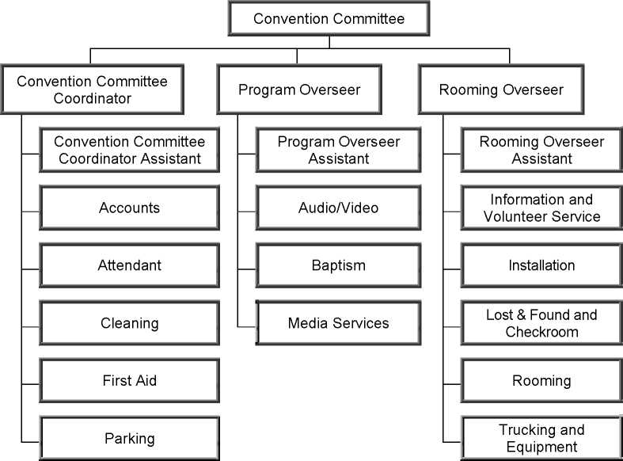

May 2017
© 2017
Watch Tower Bible and Tract Society of Pennsylvania
English (CO-1-E)
Table of Contents
Chapter Paragraphs
Role of Convention Committee Coordinator
Coordination With Other Convention Committees
Selecting and Assigning Qualified Men
International and Special Conventions
Communication With the Branch Office
Convention Personnel Report (CO-53)
Correspondence With Congregations and Individuals
Foreign-Language Conventions and Sessions
Site Inspection of Commercial Facilities
Travel Expenses and Accommodations
Working With the Contract Representative
Working With the Rooming Coordinator
Chapter Paragraphs
Information and Volunteer Service
Chapter One
1. During the modern-day history of Jehovah’s Witnesses, conventions have played a very important role in uniting the brotherhood and providing spiritual “food at the proper time” prepared by “the faithful and discreet slave.” (Matt. 24:45-47) On such occasions, the worldwide brotherhood enjoys a spiritual feast at Jehovah’s table and is taught by him to do his will. (Ps. 23:5; 143:10; Isa. 25:6; 54:13) The need for such a provision becomes all the more evident as Jehovah’s great day draws near.—Heb. 10:24, 25.
2. It is thrilling to see Jehovah’s people willingly caring for the many organizational matters involved with conventions. (Ps. 110:3) Making convention arrangements for large numbers of people involves much time and effort. Most of this activity is not observed by our brothers. Since we “do all things for God’s glory,” it is a privilege to assist the faithful and discreet slave in this unique way. (1 Cor. 10:31) We appreciate your willingness to care for an assignment that involves the spiritual interests of all who attend, especially those of our brotherhood.
3. Convention Organization Guidelines (CO-1) is the property of Watch Tower Bible and Tract Society of Pennsylvania and is for the use of each appointed Convention Committee member, Convention Committee member assistant, convention chairman, circuit overseer, substitute circuit overseer, Assembly Hall overseer, assistant Assembly Hall overseer, department overseer, assistant department overseer, safety brother, contract representative, rooming coordinator, and Convention Equipment Pool Committee chairman. It is also provided to all brothers appointed as qualified to serve on a Convention Committee, whether they will receive an assignment in a given year or not. This material may not be reproduced except for use by the persons noted above. Before each convention, the Convention Committee should confirm that all those involved with convention organization have the latest version of Convention Organization Guidelines. Although only the aforementioned brothers should have access to Convention Organization Guidelines as a whole, department overseers should ensure that keymen read the portions that pertain to their assignments.
4. Each year, the Convention and Assembly Desk in the Service Department writes to the contract representative and a rooming coordinator and directs them to conduct a survey in cities in the branch territory to determine where conventions can be held the following calendar year. If dates are already on hold at a facility, the contract representative will confirm those dates and inform the rooming coordinator. The rooming coordinator can then proceed with the hotel rooming survey, following the instructions in Convention Rooming Guidelines (CO-80). While the appointed rooming overseers should be involved in the rooming survey, the rooming coordinator may select other qualified local brothers to assist as needed.
5. The contract representative and the rooming coordinator have one or more assistants appointed by the branch office. The rooming coordinator and the contract representative are to provide the Convention and Assembly Desk with interim progress reports, and as needed, the Convention and Assembly Desk will give direction on how to proceed. When directed to do so, the rooming coordinator and the contract representative should report their survey results to the Convention and Assembly Desk. Thereafter, the results of the surveys will be analyzed as negotiations with facility management continue. Surveys in alternate cities can be initiated if needed. In due course, the contract representative and rooming coordinator will be directed to finalize the facility and rooming agreements in the locations selected by the Convention and Assembly Desk for the following year’s convention(s).
6. The branch office appoints a Convention Committee made up of three brothers to oversee each convention. The committee comprises a Convention Committee coordinator, a program overseer, and a rooming overseer. After each brother receives his committee assignment letter, he should prayerfully analyze his personal situation to see if he has the time and circumstances to fulfill this weighty assignment. (Luke 14:28) Brothers will not serve as Convention Committee members after they reach 80 years of age.
7. While sharing equal responsibility for the overall operation of the convention, the Convention Committee members should take initiative in matters under their individual oversight. At the same time, the committee should communicate regularly, keeping in mind that some matters should be considered by the committee. (Prov. 13:10) During the convention, the committee will function from the Convention Committee Office. At least two members of the committee must be on site at all times that the facility is open for our use.
8. Committee members should always follow Bible principles in dealing with others. Their fine example will be observed and followed by others in the convention organization. If problems develop, the committee should assist the brothers in a mature, kind way so that peace and unity are maintained. (1 Pet. 4:8-10) Humbly working together and giving unified direction will ensure that the convention functions smoothly.
9. Each Convention Committee member oversees selected departments, as shown on the following chart.
10. Although department overseers have the responsibility to organize their departments, each committee member should regularly check with the department overseers to ensure that the departments under his supervision are running smoothly. Two to three months before the convention, the committee should know the status of all departments. If a department is understaffed, the committee member responsible should assist the department overseer to correct the situation.—See 1:42-43; 3:75-77.
11. Each day of the convention, committee members along with their assistants should personally visit the departments they oversee. They will look for areas where they can give commendation and help the brothers to improve their departmental operations. If a committee member observes a problem in a department he does not oversee, he should bring it to the attention of the committee member responsible for that department. If immediate attention is needed, the committee member observing the problem should take the appropriate action and thereafter inform the responsible committee member as soon as possible.
12. When two or more conventions are held in the same facility, the combined committees will appoint a media services coordinator. (See 1:27.) It is not necessary for the committees to assign a coordinator for other departments. Each overseer is responsible for the operation of his department.
However, for a smooth transition from week to week, each department overseer should convey any pertinent information to the department overseer for the following convention. This is especially important with the Au-dio/Video Department.
13. Departments should not be eliminated or combined under one overseer unless the convention is held at an Assembly Hall. (See 2:63.) Maintaining separate departments provides good training for future growth.
14. The Convention Committee coordinator serves on the Convention Committee in much the same way as the coordinator of the body of elders on a congregation elder body. He is the chairman of the meetings of the committee. Like his fellow committee members, he has direct oversight of some convention departments. He represents the committee in handling facility-related matters that are included in the contract.—See 2:59.
15. On the morning after the convention, the Convention Committee coordinator should send the Convention Receipts Ledger (CO-56a) to the Accounting Department. (See Instructions for Convention Accounting [CO-63].) At that time, the Convention Committee coordinator should send the Postconvention Report (CO-62) to the Convention and Assembly Desk in the Service Department. The attendance figures in this report should include any congregations that were originally assigned to attend the convention but received permission to tie in to the program.
16. The Convention Committee coordinator should retain copies of certain documents related to the current year’s convention, even if he does not serve as the Convention Committee coordinator the following year. Such documents include the Convention Accounts Book (CO-56) and any Incident Reports (TO-5).
17. The program overseer cares for the physical matters that support the convention program (platform, audio, stage, video, and so forth) and works closely with the convention chairman. In the event that the Convention Committee coordinator cannot fulfill part of his assignment during the convention, the program overseer will assume that responsibility.
18. The program overseer and the convention chairman should meet together no later than one month prior to the convention to review each other’s roles and to consider specific information that is relevant locally. The purpose of this meeting is to make it easier to cooperate so as to ensure that the program is presented at the highest level possible. Prior to the convention, the program overseer should ensure that the audio/video overseer has access to the Convention Platform and Audio/Video Guide (CO-13).
19. Although speakers on the program may keep their copy of the outline, the program overseer should destroy all outlines and other program materials (whether printed or electronic) after the convention. Such material should not be given to anyone for personal use.
20. The program overseer should prepare a convention program that lists the name of each speaker beside his assigned part. (A version of the program with editable fields will be posted on jw.org for this purpose.) On the first day of the convention, the program overseer should provide a copy of the program to the Information and Volunteer Service Department and the Media Services Department as well as to each Governing Body member, appointed helper to a Governing Body committee, and Branch Committee member in attendance. Once program participant assignments are made, the program overseer can access the roster on jw.org by using the “Convention Speakers” link under the “Lookup” tab. The roster will be updated by the branch office as needed.
21. The program overseer will arrange for brothers working with the Attendant Department and the audio crew to be present at the meetings for those interested in Bethel service and the School for Kingdom Evangelizers.
22. In addition to being a member of the Convention Committee, the rooming overseer serves as the overseer of the Rooming Department. He should carefully study Convention Rooming Guidelines (CO-80) and follow through accordingly.
23. The Search for Contacts feature under the “Lookup” tab on jw.org should be used to obtain the addresses for congregations assigned to the convention. The Export to File feature may be used to download the addresses in electronic format as a spreadsheet. Be sure to download this information each time a Recommended Lodging List or other mailing is sent to the congregations. Please be mindful of the confidential nature of this data.
24. The Rooming Department should be set up at an appropriate place in the facility for the assistant overseer(s) and keymen to handle routine rooming matters. If problems are encountered for which they need assistance, they should contact the rooming overseer.
25. The rooming overseer is responsible for providing the attendant overseer and the information and volunteer service overseer with a sufficient supply of simple directories showing the location of all convention departments other than areas dealing with accounts. (See 3:8, 74.) Copies should also be provided to committee members, their assistants, the convention chairman, and all other department overseers as needed. Directories should not be provided to attendees in general.
26. If more than one Convention Committee is serving in the same facility, the committees should initially meet together to make necessary decisions. The committee for the first convention will take the initiative to arrange for this meeting. The Convention Committee coordinator for the first convention may serve as chairman. The contract representative, the rooming coordinator, and their appointed assistants should be included in the joint meeting to provide direction on matters related to the facility and rooming. The purpose of the joint meeting is to make decisions on matters that will affect all the conventions. These matters will include the location for the end stage and design guidelines that the installation overseers will keep in mind when developing designs for approval by all the committees. They will also determine department locations and other matters requiring joint decisions. Once these decisions are made, they will be binding upon all the conventions held that year at that facility. Principles of good communication should apply in the committees’ dealings with one another. (Prov. 15:22) With good cooperation and planning, the need to have the contract representative make special requests of the facility management or its staff just prior to or during the conventions can be minimized or eliminated.
27. During their joint meeting, the committees should select one of the media services overseers to serve as the media services coordinator. He will coordinate the work of the assigned media services overseers in order to avoid duplication of effort. Relationships with media contacts can thus be maintained in a unified manner during all the conventions. In cities with only one convention, the media services overseer will be the coordinator. The Convention Committee coordinator for the first convention should submit the completed Convention Media Services Coordinator (CO-67) form to the Convention and Assembly Desk in the Service Department and provide a copy of the form to each committee.
28. A separate purchasing department should not be set up. However, where practical, the committees should arrange to combine the purchase of items used by all the conventions. Buying in larger quantities and using cooperative vendors keeps costs down and saves duplication of effort. If multiple conventions are involved, any surplus items can be passed on to the next convention. Some vendors may accept unopened cartons of unused items for full credit.
29. The branch office will contact the program overseer for the first convention about the audio and video equipment needs for the convention(s) at that facility.—See 3:21-47.
30. Convention Committee Member Assistants: Soon after the Convention Committee members have accepted their assignments, they should meet to select capable elders to serve as committee member assistants. They should select younger men who have potential and who are reaching out. Those selected should have experience in convention organization, and with training they should be able to serve as committee members. In most cases, committee members should be unanimous in their selection of those who serve as assistants. To the extent possible, they should first choose from among those who have already served as committee member assistants or department overseers and who may have also been recommended in the past to serve on a committee. When selecting assistants, committee members should not choose from only those brothers with whom they are most familiar. In some cases, the Convention and Assembly Desk in the Service Department may provide the committee members with direction specific to their convention. Committee members should feel free to contact the Convention and Assembly Desk for assistance as they review their options as a committee.
31. Committee member assistants can attend committee meetings, including the meeting when department overseers and assistants are selected and any meetings with other committees. While they may participate in discussions, the committee is responsible for making final decisions. However, they should not be viewed merely as helpers. With proper training, they may qualify to care for all aspects of committee responsibilities and thus, be recommended to serve on a committee in the future.
32. During the convention, they may be used to handle problems of a minor nature, make out confidential reports, accompany the appropriate committee member when he personally visits the departments he oversees, accompany the committee on site inspections, and care for other matters at the direction of the committee. They should be able to convey direction when a member of the committee is not available. There should not be need for additional personnel in the Convention Committee Office other than some secretarial support.
33. Department Overseers and Assistants: The Convention Committee and the Convention Committee member assistants should meet to select qualified elders to serve as overseers and assistants for the various convention departments. Consideration can be given to selecting qualified brothers who may be in congregations farther away from the convention city, allowing them the opportunity to accept assignments as well. These selections should be completed and the brothers informed several months before the convention, so that they will have sufficient time to recruit keymen and volunteers and organize their departments fully. Committees may assign two assistants to convention departments for training purposes, where practical.
34. The committee should select the most qualified brother for each assignment, realizing that each brother has different gifts. (Rom. 12:3-8) The committee may select as department overseers or assistants brothers who are appointed as qualified to serve on a Convention Committee but who are not serving on a committee in a given year. Those selected must be less than 80 years of age and have the time required to fulfill all aspects of the assignment. The same Scriptural qualifications for oversight in the congregation apply to convention oversight. Overseers should be able to give direction and instructions in a loving manner. They should display the fruitage of the spirit at all times. They should take the time to observe those working under their oversight and freely commend them for their efforts.— Ex. 18:21; Gal. 5:22, 23.
35. If additional qualified brothers are needed, the committee may request an up-to-date copy of the circuit organization rosters and any further recommendations from the circuit overseers of the congregations assigned to the convention. The committee may use this information in their selection of department overseers and assistants. This information may also be supplied to department overseers so they can recruit keymen and other volunteers for their departments. The contact information for the circuit overseers of the assigned congregations may be found on jw.org, using the Search for Contacts feature under the “Lookup” tab.—See 3:75-77.
36. When selecting an elder to serve as a department overseer or assistant, it is usually not necessary to seek the comments of his Congregation Service Committee. However, if the Convention Committee wishes to use a brother who has moved to a new congregation but has not yet been reappointed as an elder, the committee should confirm that he was recommended for reappointment by his previous body of elders.
37. Department overseers and assistants should generally be selected from the congregations assigned to the convention. The committee should direct department overseers to select their own keymen, although the committee may recommend the use of certain experienced brothers as needed.
38. In the rare event that a qualified elder is not available to serve as a department overseer or assistant, a well-qualified ministerial servant may be used. Unbaptized publishers may volunteer to work but cannot have positions of oversight. Unless there is an exceptional need and approval is given by the branch office, Bethel family members should not be used as department overseers or assistants. To avoid giving a wrong impression, a father and son should not be selected to serve as the accounts overseer and assistant.
39. Convention Committees and department overseers should be conscious of training others, especially younger men who have potential and who are reaching out. There is value in a brother receiving training in various departments, if possible. Progressive training may include serving as a department assistant and then as a department overseer. Brothers who qualify may serve as a Convention Committee member assistant and be recommended to serve on a committee.
40. During the convention, the committee should discuss any additional brothers they believe should be included on the Convention Personnel Report (CO-53). Although it is not required that a brother serve as a Convention Committee member assistant before being recommended, it is preferred that he first serve as the overseer of a large department. (See 2:11-13.) Each committee member should rate each brother who is added to the report.
41. Information regarding a qualified brother who has been trained should be conveyed to next year’s committee. If it is not known which convention the brother is assigned to attend, that information can be obtained from the Convention and Assembly Desk in the Service Department.
42. Each department is responsible to recruit its own volunteers well before the convention. As soon as department overseers and keymen accept their assignments and read their instructions, they should begin recruiting. Volunteers must be at least 16 years old to serve alone; otherwise, they must serve in an assignment appropriate to their age and experience with a parent or an adult. Sisters, unbaptized publishers, and undocumented aliens should not be used in positions of oversight or to give direction to others. As long as good judgment is used, there is no objection to wives serving in the same department as their husbands. Volunteers should be approved by the elders of the congregation they attend.
43. The Convention Committee should give department overseers a list of the congregations assigned to the convention. Keymen should personally recruit volunteers from the assigned congregations. For large departments, keymen may need to select captains. These captains may assist in the recruiting process. The keymen must keep the department overseer informed of their progress.
44. The branch office appoints the convention chairman to oversee the program itself. He is to cooperate with the Convention Committee and work closely with the program overseer. For a complete description of the work of the chairman, see Instructions for Convention Chairman (S-329).
45. When the Governing Body arranges for international and special conventions, specific direction will be provided to the Convention Committee(s).
Chapter Two
1. The Convention Committee may make an identification card that can be used to gain access to restricted convention areas other than the Accounts Department. If needed, this card should be given only to Convention Committee members and their assistants, the convention chairman and his assistants, department overseers and their assistants, and the safety brothers. It is not to be worn but should be used as an identification card when requested.
2. Alcoholic beverages should not be brought to the convention site.
3. The content of announcements must be reviewed and approved by at least one member of the Convention Committee. Except in cases of extreme emergency, announcements should be made only during scheduled announcement periods.—See Chapter 3, paragraph 53, regarding baptism announcements at locations with limited space around the baptism pool.
4. Announcements should not be made requesting that individuals report to the Media Services Department for personal interviews. Such requests should be conveyed privately.
5. Brothers who are assigned to handle business matters for the convention may use Jehovah’s Witnesses Convention business cards. This includes contract representatives, rooming negotiators, and media services overseers. Their personal address and contact information should be used. No logos should be used on the card. If such cards are needed, they can be prepared locally, following the example below.
[Appropriate corporation name]
Operating Jehovah’s Witnesses Convention
Joseph Stevens
Contract Representative
48-12 Always Blvd Cell: (917) 888-4848
Boston, MA 42436-2273 Home: (707) 736-6006
Fax: (707) 536-5556
E-mail: myname@personal.com
6. Correspondence and telephone calls to the Convention and Assembly Desk in the Service Department should come from members of the Convention Committee only. However, if necessary, a department overseer may join the committee member on the call. It is preferred that forms and correspondence be sent using the jw.org Inbox feature rather than unsecured e-mail or postal mail. (See the latest letter to all bodies of elders regarding the use of jw.org.) Any correspondence that must be sent via postal mail should include the name of the sender and the convention name, date, and number/language, if applicable.
7. After the convention, the committee should decide if there is a need to report any difficulties in connection with the functions of the convention, such as with the platform, the sound, the video, the stage, the lighting, or the facility itself. If the committee has observations, suggestions, or outstanding experiences to share regarding the facility or function of the convention, they are welcome to send a separate brief report to the Convention and Assembly Desk.
8. To ensure good communication, it is important that committee members keep the Convention and Assembly Desk informed of any changes to their contact information. Those who have an account on jw.org must make needed adjustments to their phone numbers and e-mail addresses in the “My User Profile” section of jw.org. Changes to physical or mailing addresses or telephone numbers not listed on jw.org, such as work and fax numbers, should be conveyed to the Convention and Assembly Desk.
9. The Convention and Assembly Desk may be contacted at the following address and telephone number, Monday-Friday, 8 a.m.-5 p.m. [Time zone]. An after-hours emergency number is provided to committee members in their appointment letter.
[Corporation name]
ATTN: Service Department—Convention and Assembly Desk [Street address]
[City, province or state, zone or code]
[Phone number]
[Fax number]
[E-mail address]
10. Branch Risk Management Desk: The following is provided so that the Convention Committee may communicate with the Branch Risk Management Desk in the Accounting Department regarding insurance, accidents, and related matters.
[Corporation name]
ATTN: Accounting Department—Risk Management Desk
[Street address]
[City, province or state, zone or code]
[Phone number]
[Fax number]
[E-mail address]
11. The Convention Personnel Report is used by the branch office to identify brothers who qualify to serve on Convention Committees. The Convention Committee coordinator will ensure that a master copy of the report is prepared, filling in the necessary names, addresses, and statistics. Full names should be used rather than nicknames or abbreviations. After the master copy is prepared, the form should be sent electronically to the Convention Committee coordinator, program overseer, rooming overseer, Convention Committee member assistants, and Attendant and Cleaning department overseers. This should be done as soon as possible so that they can make meaningful observations and recommendations.
12. Each brother should understand that completing the report is part of his assignment. Thus, he should sufficiently observe the brothers who are listed so that he can supply the information requested. In addition, he may list other brothers who are not currently serving as department overseers but who might qualify to serve on a committee.
13. If the brother completing the report believes that a brother he is reporting on is seriously deficient in a certain area, he should first speak to the brother about the deficiency. He should indicate on the report the counsel given and the brother’s response. No later than one week after the convention, each brother should complete and send his original report directly to the Convention and Assembly Desk in the Service Department. This task should not be delegated to others.
14. Any official letters, whether to congregations or others, should follow the letter format shown in Appendix A. All letters to congregations must be approved by the Convention Committee. Other letters, such as those to department overseers and volunteers, must be approved by at least one member of the committee. The committee may decide to send letters of appreciation to companies, city departments, management, facility personnel, and other non-Witnesses who provided outstanding service to the convention.
15. Letters to the congregations should be brief and focus only on vital issues or provide necessary information. There is no need to reiterate instructions from our publications or letters from the branch office unless there is a specific situation needing attention. In most cases, there is no need for the letter to be read to the congregation. Rather, at the next midweek meeting an announcement should be made to the congregation that a letter regarding the convention has been posted on the information board.
16. On occasion, the Convention Committee may receive requests from individuals in other countries for invitation or sponsorship letters. All such requests should be forwarded to the Convention and Assembly Desk in the Service Department.
17. Most forms and letters are posted on jw.org for downloading and printing. Two Convention Committee members or Convention Committee member assistants should serve as local domain administrators. When a brother is appointed to serve in one of the positions listed on the JW.ORG Convention Domain Roles (CO-15) form, he should be informed that he will need to provide his user code to one of the domain administrators to be added to the domain and receive the appropriate roles. If the contract representative and/or rooming coordinator are not serving on a committee in the convention city, they should be added to the domain of the first convention in the city and assigned the roles shown on the form. Since the rooming coordinator needs to provide the rooming overseers with the Recommended Lodging List, the rooming coordinator should be given access to the domain as soon as possible.
18. Only the department overseer should be given access to the convention domain. No ministerial servants should be given access to any part of the convention domain. If a department overseer is not able to access the materials he needs by means of jw.org, then the committee member responsible for that department should make arrangements for him to receive the assistance needed.
19. Please read the “Help” text on jw.org and endeavor to obtain local help on technical issues related to accessing jw.org before calling the branch office Help Desk for assistance. Reviewing the principles provided for all bodies of elders regarding the use of jw.org will be helpful as well. Questions related to the forms or letters posted on jw.org should be directed to the Convention and Assembly Desk in the Service Department.
20. Proper dignity and a quiet working environment should be maintained in all convention departments. Only necessary personnel should remain at a department’s location during the program. This is especially important when departments are located in corridors.
21. The appearance of a large catered event should be avoided at mealtimes in the Convention Committee Office and the Chairman’s Office.
22. At times, overseers may be approached by individuals requesting assistance with personal or congregation problems. In such cases, it is usually best to encourage these individuals to approach their own elders and to listen to the convention program, as this may provide the necessary spiritual assistance.
23. A megaphone and a large flashlight should be accessible near the platform in the event the lighting or sound system fails.
24. An emergency preparedness plan should be developed by the contract representative, the Convention Committee(s), and the attendant over-seer(s). If the facility management has an emergency preparedness plan, it should be used as the basis for the convention’s plan, making adjustments as needed. The plan should include evacuation procedures and a listing of telephone numbers for emergency services in the area.
25. If in the event of an emergency the committee needs to consult with the Convention and Assembly Desk in the Service Department after working hours, the emergency number provided to committee members in their appointment letter should be used.
26. The Convention Committee should obtain approval from the Convention and Assembly Desk in the Service Department before renting or purchasing equipment, such as baptism pools. The Convention and Assembly Desk may already have a source for such equipment or may have guidelines for standardizing such equipment. In some cases, it may be possible to borrow equipment rather than renting or buying it. When multiple conventions are held at the same facility, it may be possible to share equipment. Equipment should be stored for reuse wherever this is practical. (See 3:111116.) All purchases of materials and supplies should be approved by one member of the committee.
27. To prevent theft or loss of expensive equipment and supplies, do not leave such items in the facility all night or during the interval between conventions unless the items are secured at all times.—See 3:19-20.
28. Extensive preconvention work is usually not necessary, especially if the same facility is used regularly for conventions. However, in some circumstances, such as in connection with a special or international convention, extensive preconvention work may be needed.
29. Limited preconvention work, such as setting up departments, installing and testing sound equipment, and cleaning the facility, is usually necessary. This work should be well-planned and organized. Volunteers participating in preconvention work should care for their own food needs. Encourage modest dress and grooming. At some facilities, volunteers may be required to wear a badge card for identification.
30. One or more Convention Committee members should be available as needed during the convention week.—See 2:45.
31. Convention Headquarters: A Kingdom Hall may be used, if necessary, as the convention headquarters. When selecting a Kingdom Hall, the Convention Committee should confirm that there is sufficient room and that the congregation will not be unnecessarily inconvenienced. The committee should offer to reimburse the congregations using the Kingdom Hall for extra expenses incurred as a result of convention operations, such as for electricity and paper goods. Before finalizing the use of a Kingdom Hall, the local elders and the committee should agree on what will be required.
32. After being appointed, the committee should submit a completed Convention Committee Acceptance and Rooming Headquarters Information (CO-68) form to the Convention and Assembly Desk in the Service Department. The committee may choose any address they believe is practical, such as a Kingdom Hall, an Assembly Hall, or a post office box. If there are multiple conventions in the same city, it is not necessary to use the same headquarters address. All parties involved should agree that the contact information can be used, keeping in mind that it will appear on the Recommended Lodging Lists and on all correspondence from the convention to the congregations. The information will be provided on jw.org for congregation elders by means of the Lookup feature. In lands where Internet access is limited, the Convention Rooming Headquarters Addresses (CO-5b) form will be used to provide this information. It will also be supplied by the Convention and Assembly Desk to individuals who request contact information for the convention.
33. The committee should regularly check for correspondence and voice mail in the months leading up to the convention and each day during the week before the convention. Any inquiries should be responded to promptly.
34. Preconvention Meetings: Two to three months before the convention, the Convention Committee will arrange a meeting with all department overseers and their assistants. The purpose of this meeting is to ensure that preparations are progressing well for each department and to impart necessary additional instructions. This one-hour meeting should be opened and closed with prayer. There is no need to give Bible talks, sing Kingdom songs, or consider the daily text. Following the meeting, committee members should cover any necessary instructions with individual department overseers and assistants under their oversight. If the department overseers and assistants have not yet reviewed pertinent instructions in Convention Organization Guidelines (CO-1), this should be done. There should be no need for the committee to hold additional meetings with all departments. The committee may hold a move-in meeting with selected department overseers and their assistants a few weeks prior to the first convention in a facility and may hold a final move-out meeting on the last day of the convention.
35. Safety is a priority and must be taken seriously. All Convention Committee members, committee member assistants, department overseers, and assistant department overseers should be familiar with the direction regarding safety contained in this section and elsewhere in Convention Organization Guidelines (CO-1).—See 3:9, 12, 49, 58, 63.
36. Department overseers are to make assignments in accord with a volunteer’s ability and experience and should convey safety measures and policies to those in their departments prior to the convention.
37. Most accidents occur on stairs, while loading and unloading trucks, and while moving materials. A sufficient number of volunteers should be used to move materials safely. Mature brothers should be assigned to move trash, equipment, and other items very carefully so as to avoid accidents. Persons using knives, power tools, and machinery especially need to be safety conscious, using any necessary protective equipment.
38. The committee should assign and train one or more capable, observant, and tactful brothers to identify and help resolve potential safety hazards. These brothers should be invited to attend the preconvention meeting held with all department overseers and should be given a copy of Convention Organization Guidelines.
39. During the convention, the safety brother(s) will work with the Convention Committee coordinator as well as the appropriate department overseers to address safety hazards. The safety brother(s) should regularly check the facility, parking areas, sidewalks, and convention operations. Unsafe situations could include trip hazards, water spills, uneven cracks in the floor or stairs, loose or missing handrails, loose ceiling plaster or concrete, and so forth.
40. Property damage caused by convention personnel or attendees should be reported on the Incident Report (TO-5). The completed form should be reviewed by the Convention Committee coordinator and sent to the Branch Risk Management Desk in the Accounting Department. The Convention Committee coordinator should retain a copy of the form for one year. In the event of property damage or loss, no convention personnel should agree to any settlement or commitment unless directed to do so by the branch office.
41. A smaller foreign-language convention may share the facility with a larger convention. The Convention and Assembly Desk in the Service Department will arrange for each convention to have its own meeting location in the facility. Although the smaller foreign-language convention has its own committee, the committee for the larger convention coordinates such matters as installation, baptism, parking, rooming, and attendants in common areas.
42. At times, permission is granted for sessions in other languages to be held concurrently with a larger convention. In such sessions, qualified speakers present selected parts directly in the target language, with recordings or simultaneous interpretation of the remainder of the program being presented to the extent possible. The Convention and Assembly Desk will arrange for these sessions to have their own meeting location in the facility. Interpreters should be provided a quiet room, booth, or other area equipped with headphones or a speaker carrying the host convention program so that they can listen to the talks and interpret them using a microphone connected to the session sound system.
43. When a session or simultaneous interpreting is arranged, the branch office appoints a brother to coordinate matters. This brother is to work closely with the committee and chairman of the host convention. The Convention Committee will determine which departments are necessary for the smooth functioning of the program in the other language. Thereafter, the brother appointed to coordinate matters should select keymen to organize the needed departments. The keymen may recruit volunteers from brothers and sisters attending the other-language program. These keymen serve under the direction of the respective department overseers of the host convention. Simultaneous interpreting should not be arranged without permission from the branch office.
44. When sign-language conventions are arranged, no provision should be made for sign-language interpretation at other conventions without permission from the Convention and Assembly Desk in the Service Department. In the event that a deaf person and a signer attend a hearing convention, only one-on-one interpreting is allowed. However, this should be done discreetly so as not to distract others. Tactile interpreting is allowed at any convention. If sign-language conventions are not arranged, the following direction applies:
• Seating Area: Have a spiritually mature deaf brother assist with selecting the seating area. If possible, select an area where all the deaf attendees will be able to see the sign-language interpreter and the main stage in the same line of sight but where the interpreter will not be an inordinate distraction to the hearing audience. Many deaf individuals will benefit from being in an elevated seating area where they can look down at the interpreter and beyond to the main stage. However, the signlanguage area should not be directly in front of the stage, since the signing may be distracting to the main audience. The area selected for the deaf audience should be free of visual distractions such as traffic, obstructions, glare, or overly bright houselights. When using outdoor facilities, neither the deaf nor the interpreters should face the sun if at all possible. Be sure the area can accommodate the families and companions of all the deaf attendees and of the interpreters. The number of hearing family members and friends may be twice that of the deaf people in attendance. If the attendance in this section is higher than expected, those who come merely to improve their interpreting skills may be asked to sit near the perimeter. The seating area should be clearly marked “SIGN LANGUAGE.” Tactile interpreters need to be located where they can clearly see the main interpreter without obstruction.
• Lighting: When meeting at a location other than an Assembly Hall, be sure to have good lighting so that shadows are minimized and the interpreters can be clearly seen by those in the rear of the designated section. Generally, it is sufficient to have one key light placed at a 45-degree angle above and to one side of the interpreter and one fill light placed at a 45-degree angle above and to the other side of the interpreter. This allows the interpreter to be viewed naturally. The fixtures should be shielded so that the light beam is controlled and focused on the interpreter and does not become a distraction to the deaf or the main hearing audience. At outdoor facilities, floodlights may be needed so that the interpreters do not appear considerably darker than the sky and field in the background.
• Sound: In certain situations where the sound is not optimal or where noise from outside sources (such as planes flying over an outdoor stadium) may potentially interfere with the interpreting, it may be necessary for the audio crew to provide good-quality headphones for the interpreters.
• Platform and Backdrop: When circumstances require a platform for the interpreters, the Installation Department should construct one that is at least 4 feet by 8 feet (1.2 m x 2.4 m), but not more than 8 feet by 12 feet (2.4 m x 3.7 m). (If the seating area is on risers or has an aisle in front where the interpreters will have enough space to work, there may be no need to build a platform.) If elevated above ten inches (25.4 cm), the platform should include steps that are wide enough for two persons (or two sets of steps) and a railing for safety. Use a solid backdrop, one with a pale- or medium-blue matte finish, at least six feet (1.8 m) high. This will help eliminate eyestrain caused by a multicolored or glary background and will make the interpreter’s signing stand out. Usually, cloth works best. At outdoor facilities, a dark screen-type material might serve equally well. If the seating area is wide, the backdrop may wrap around the signing platform two to four feet (0.6 m to 1.2 m) on both sides so that it will appear behind the interpreter from any viewing angle. Make sure not to block anyone’s view of the main stage.
• Use of Natural Sign Language: In many countries, sign language is used in two major ways. One form uses signs as a word-for-word interpretation of the spoken language. The other form is generally known as natural sign language. It is the form most commonly used by the deaf in their daily conversations. It functions separately from the spoken language and has a different grammar. It tends to put more emphasis on the use of space, facial expressions, and the inflection of signing motions in order to achieve various shades of meaning. Even though preference for either of these two forms of sign language will vary depending on the deaf individual, the majority of deaf people converse in natural sign language and, therefore, understand it best. Thus, where possible, those who are most proficient in the natural sign language should be used for interpreting.
• Assistant Parts: Interpreters of assistant parts, such as experiences, interviews, and demonstrations, should be instructed to face the audience while signing their parts but to face the signing interpreter while waiting their turn.
• Attire: The interpreter’s appearance should be exemplary, measuring up to the standards set for program participants on the main stage. Any jewelry, watches, or clothing that could be distracting should not be worn, and long, brightly painted fingernails should be avoided. Clothing that clings to the body should also be avoided. Solid-colored clothing that contrasts with the interpreter’s skin tone should be worn. This will help eliminate distractions caused by busy patterns.
• Head Coverings: A sister’s use of a head covering in some circumstances is not necessary, since all in attendance should be able to appreciate that she is not actually conducting the meeting. This would be the case, for example, when she interprets demonstrations. However, if a well-qualified sister must be used to interpret talks given by brothers, prayers, or songs, she should wear a modest and appropriate head covering as a sign of submission to the theocratic arrangement in the Christian congregation. (1 Tim. 2:11, 12; w09 11/15 pp. 12-13) An exception to this direction can be made for a sister doing tactile interpreting for one who is both deaf and blind. Such a sister would be seated in the audience, signing into the palm of just one individual. Since she would not be situated prominently as would an interpreter for those who are deaf only, she would not need to use a head covering in this instance.
• Songs: When the program calls for a song that is not available in the appropriate sign language, the brother assigned to coordinate the interpretation will make arrangements for an alternate song that shares a similar theme or sentiment to be carefully chosen. Attention should be given to the timing of the alternate song so that it does not unduly delay the program. If no songs in the appropriate sign language are available, the group should sign the scheduled song through an interpreter, preferably a brother.
45. At the start of the move-in day, the Convention Committee members and their assistants should make a thorough inspection of the facility, equipment, and parking areas that are under contract for the event. The committee should make a written record of any preexisting defect or damage. It can be helpful to take photos or make a video of the defect or damage. This record should be reviewed with the contract representative who, in turn, will review it with the facility management. Copies of the record should be given to the facility management and the contract representative.
46. After the convention, when the facility has been thoroughly cleaned, a final inspection should be made of the facility, equipment, and parking areas that were under contract for the event. The inspection is performed by the contract representative (or his assistant if the contract representative is not available), the Convention Committee members and their assistants, and the facility management representative. If there is any damage to the facility or any damaged or missing equipment or if any areas were not properly cleaned, this should be noted and, if possible, corrected immediately.
47. After the final inspection is completed and any discrepancies have been resolved, the contract representative (or his assistant) and the facility management representative will sign and date a Site Inspection Release Agreement (CO-14). This should be done after each convention, even when there is no move-out between multiple convention weeks. The contract representative will send the signed Site Inspection Release Agreement to the Convention and Assembly Desk in the Service Department on the day following the convention. He should make a copy of the signed release agreement for his file, for the committee, and for the facility management.—See Chapter 2, paragraph 64, for direction on inspections of Assembly Halls.
48. A ventilated room or enclosed area should be arranged for mothers to care for their babies. This room should be conveniently located and equipped with chairs, tables, program sound, and, if possible, restroom facilities.
49. Special sections or rooms cannot usually be provided for individuals who are claustrophobic or seriously ill or who have chemical sensitivities. Convention Committees should contact the Convention and Assembly Desk in the Service Department before making exceptions, keeping in mind what is in the best interests of the majority of attendees.
50. Special parking for convention oversight is not necessary. However, the committee should reserve a few parking spaces for convention operation in addition to those for the disabled.
51. Circuit overseers desiring reimbursement for expenses incurred during the week of their assigned convention should submit the expenses to the assembly overseer of their assigned circuit or to the branch office rather than to the Convention Committee.
52. The committee should arrange for accommodations either in complimentary hotel rooms or in the homes of local brothers for any circuit overseers attending the convention. In either case, circuit overseers should submit a Special Needs Room Request (CO-5a) to the Rooming Department well in advance of the convention. If a circuit overseer chooses to make his own arrangements, he may do so.
53. Organizational funds will be used to pay for the travel expenses of Governing Body members (and their wives) in connection with conventions featuring the release of a revised edition of the New World Translation. The organization will also cover travel expenses for Governing Body members and appointed helpers (and their wives) assigned to serve at international or special conventions.
54. At times, committees invite Governing Body members to attend a regional convention. However, invitations to such events are accommodated only if the Governing Body members are available and as long as the committee making the invitation specifies that travel expenses will be covered by private funds. Funds contributed to the worldwide work at conventions are not to be used for this purpose.
55. Convention funds should not be used for travel or other expenses for anyone who attends the convention or shares on the program. If someone is invited from Bethel or elsewhere, he must pay his own travel expenses or these must be cared for by an unsolicited private source.
56. The branch office assigns a brother to serve as its contract representative in cities where conventions are held in commercial facilities. He cares for contract negotiations with facility management, concessionaires, parking facility owners, and local government agencies.
57. Much time and effort is devoted to negotiating the best rental rate, and because of the uniqueness of our conventions, special terms are often agreed upon, which allow our conventions to operate in the manner required. The Convention Committee will be provided with a copy of the facility contract, concessions contract (if separate from the facility contract), certificate(s) of insurance, and any other documents that relate to the use of the facility. The committee should become thoroughly familiar with these documents well in advance of the convention. Any questions regarding these documents should be directed to the Convention and Assembly Desk in the Service Department. The dates and convention location should be kept confidential until the congregations are informed. The terms of the contract(s) are always confidential.
58. If problems arise regarding equipment, supplies, or services included in the contract, the Convention Committee coordinator should discuss the matter with the contract representative. If the contract representative is not able to resolve the matter, he will contact the Convention and Assembly Desk.
59. Special Requests: To avoid problems with contract negotiations, Convention Committees should not approach the facility management with requests for additional use of the facility, equipment, supplies, or services not included in the contract. Such requests should be made only through the contract representative. If he determines that the request is appropriate, he and a member of the committee may discuss the matter with the facility management either in person or by conference call. If such requests might result in additional charges or complications, the contract representative should contact the Convention and Assembly Desk in the Service Department beforehand.
60. If an unusual situation involving rooming occurs, the rooming overseer or the Convention Committee may contact the rooming coordinator. Since hotel contacts may be available only on weekdays, problems may not be fully resolved until after the convention.
61. No spotlights or special lighting may be used during the convention program unless the committee is directed to do so by the branch office. The committee should determine in advance if the available stage lighting is adequate. If it is not adequate, the Convention and Assembly Desk in the Service Department should be contacted for direction. House lights should not be dimmed at rented facilities.—See Chapter 2, paragraph 66, for additional direction on lighting at Assembly Halls.
62. When an Assembly Hall is used for conventions, the Convention Committee may request use of the Assembly Hall for meetings in preparation for the convention. During the convention, the committee and the convention chairman will care for matters pertaining to the event—both organizationally and with regard to the program. A brother who is qualified to respond to issues that may arise with the building or building systems will be on hand during the convention. He may be the Assembly Hall overseer, his assistant, or another elder designated by the Assembly Hall overseer. The committee should inform the Assembly Hall overseer of the name and contact information of each committee member. The Assembly Hall overseer may provide a manual with information on the operation of certain equipment or instructions on how certain matters should be cared for, and the convention organization should cooperate fully with any such arrangements.
63. An Installation Department and a Trucking and Equipment Department would likely not be needed when the convention is held at an Assembly Hall. The Lost & Found and Checkroom Department may be combined with the Information and Volunteer Service Department.
64. At the conclusion of the convention, after the building has been thoroughly cleaned, an Assembly Hall representative will accompany the committee members and their assistants on an inspection. If any areas were not properly cleaned, these should be noted and, if possible, corrected immediately.
65. There should not be a great need for the signs printed by the branch office when conventions are held at Assembly Halls. However, if some of the signs listed on the Convention Sign Request (CO-100) would be especially helpful for the convention, they may be requested. If this is the first time conventions will be held in a particular Assembly Hall, it may be beneficial for the Convention Committees to tour the Assembly Hall and select department locations first as well as check with the Assembly Hall overseer to see what signage already exists.
66. At Assembly Halls using low-brightness projectors, the lights may be dimmed when a video is shown as long as the lights can quickly be returned to full brightness. The lights should be dimmed only for longer videos, such as dramas. When the lights are dimmed, there should still be a sufficient light level to ensure audience safety.
67. Regular Pioneers: If a regular pioneer is needed for preconvention or postconvention work, the Convention Committee may grant him hour credit toward his monthly goal. Pioneers should not be allowed to count time for convention work during the days they attend their own convention. This arrangement should be explained to any regular pioneer invited to serve. Care should be taken so that this provision is not abused.
68. Special Pioneers: Special pioneers are not to be taken from their assignment without good reason. Requests to use special pioneers for preconvention or postconvention work should be made by the Convention Committee and directed to the Convention and Assembly Desk in the Service Department. This should be done prior to inviting them to serve. The request for a special pioneer should include his name, the dates he is to serve, the reason he is needed, and the assignment planned for him. Thereafter, the committee would contact the special pioneer, offering the assignment and informing him that the branch office has given approval if he is in a position to accept. A special pioneer approved by the branch office to do preconvention or postconvention work may submit any related travel expenses to the branch office. The convention would not care for any rehearsal expenses for a special pioneer participating on the convention program.
69. It is not necessary to have a Literature Department. With the exception of Bible releases, new publications are released at conventions only as electronic copies. When a Bible is released at a convention, the Convention Committee should make arrangements for the Attendant Department to assist with the distribution. Where it is practical to do so, attendants may distribute Bibles to all in attendance while the audience remains seated. Regardless of how the Bibles are distributed, please ensure that elderly and infirm ones receive special care so that they can easily obtain a Bible.
70. Badge cards and holders should be obtained through the congregation and should not be made available by convention departments.
Chapter Three
1. To ensure that donated funds are handled properly, at least two brothers from the Accounts Department should be present when funds are collected, processed, and deposited. The brother assigned as the accounts overseer should be a well-qualified, trustworthy elder who is able to comprehend and follow detailed instructions. The accounts overseer, assistant(s), and keymen should personally recruit trustworthy, spiritually mature volunteers.—For further direction on accounts, see Instructions for Convention Accounting (CO-63).
2. As soon as possible after receiving their assignments, the attendant overseer, his assistant(s), and keymen should meet to discuss the instructions in this subheading, Convention Attendant Instructions (CO-23), any local facility requirements, and arrangements for recruiting attendants. Thereafter, planning, recruiting, and training can begin.—See 1:10.
3. Attendants should be mature, experienced brothers, preferably elders or ministerial servants, who demonstrate good judgment. They should be alert, courteous, kind, and properly dressed and groomed. Attendants under 20 years of age should be ministerial servants. Well in advance of the convention, the attendant overseer should provide each attendant with a copy of Convention Attendant Instructions.
4. All attendants must wear an Attendant (CO-19a) badge for identification. The words “security” or “guards” should not be used regarding any volunteers—they are “attendants” or “watchmen.”
5. On the first day of the convention, the attendant overseer will hold a meeting with all attendants before the doors are opened to the public. During this meeting, reminders from Convention Attendant Instructions and from this subheading should be reviewed. This review should include describing how an attendant can kindly remind any who are not seated during the music-video presentations to find their seats and quietly enjoy the presentation. He should also review emergency procedures so that all attendants will know their duties in the event of an evacuation or other emergency, including how to make immediate contact with the First Aid Department and the attendant overseer or his assistant.—See 2:24.
6. Some attendants should be on hand when convention personnel arrive for work assignments before the doors are opened to the public. To assist with seating and crowd control, a sufficient number of attendants, especially those posted at the entrances, should be at their assigned locations at
least 15 minutes before the doors are opened to the public. If necessary, attendants may be assigned to serve in shifts. The attendant overseer should arrange for two brothers to be posted at the entrance door to the Accounts Department at all times.
7. A sufficient number of attendants should be assigned to the Bethel meeting and the meeting for the School for Kingdom Evangelizers. When a Bible is released at a convention, the Attendant Department will assist with the distribution.—See 2:69.
8. Directories: The rooming overseer will provide the attendant overseer with a sufficient supply of simple directories showing the location of all convention departments other than areas dealing with accounts. The attendant overseer will provide a directory to any attendant not familiar with these locations. Directories should not be provided to attendees in general.
9. Escalators, Stairs, and Elevators: Escalators and stairways should have attendants assigned at the top and bottom of each level to supervise their use and assist anyone needing help. Assigned attendants should know how to stop the escalators in an emergency. When allowed by the facility management, attendants should operate elevators in order to maintain the orderly movement of attendees and to ensure proper supervision.
10. Seating: The Convention Committee will determine what sections of seating will be used, taking into consideration the estimated total attendance, including the percentage of disabled, elderly, and infirm ones. Avoid using sections in upper levels and behind the stage if they are not needed. The committee may decide to open these sections later if the attendance is greater than expected. All sections that are likely to be used should be opened simultaneously at the start of the day. This will avoid overcrowded seating and allow attendees to choose their preferred seating location. At least two attendants should be assigned to all seating sections, one at the front and one at the back.
11. On the morning of the baptism, the Attendant Department will reserve a section of seats in front of the platform for baptism candidates. The attendant overseer and the baptism overseer should make these arrangements.
12. For safety reasons, baby strollers and lawn chairs may not be used by attendees in general. However, if allowed by the secular authorities and the facility, strollers and lawn chairs may be used for disabled children and adults, but only in a section reserved for the disabled.
13. Adequate seating, including space for wheelchairs, should be reserved for the disabled, the infirm, and those 65 years of age and older.
Signs may be used to identify these special sections. These sections may include some floor seating, the first few rows up from the floor, or seating near the corridor where attendees enter the seating area. To the extent possible, these seats should provide a clear view of the stage and easy access to restrooms. Persons directly assisting the disabled, elderly, and infirm may sit with or near them. Prior to the convention, each assigned congregation should be informed which rows or sections will be reserved.
14. Attendance Count: To ensure uniform attendance figures, the count should be taken simultaneously at a time that will have the highest attendance for that session as determined by the Convention Committee. Convention Attendant Count Cards (CO-24) are provided for captains and keymen so that the count can be taken at the designated times and the total attendance compiled by the Attendant Department. The attendance figures for each session should be provided to the convention chairman and the Convention Committee Office so that an announcement can be made at the end of each session. The attendance figures should include any congregations that were originally assigned to attend the convention but received permission to tie in to the program.
15. Dealing With Difficulties: Attendants should be assigned to monitor and control access to the stage at all times that the building is open to the public. This should be done in a way that is not distracting to the audience. If there is no seating on the field of a stadium, attendants should be assigned to monitor the entrances to the field to prevent unauthorized individuals from entering.
16. Please note the following information with regard to disruptive individuals:
• It is best to ignore trivial or minor disturbances created by individuals. However, if someone persists in this course of action and is distracting others, he should be asked to leave. If the disruptive individual refuses to leave, you should inform him that if he does not leave and continues to distract others, you will contact the police. If the individual does not cooperate, the police or the facility security personnel should be called. When the police arrive, they may be informed that the individual is causing a disturbance and that his implied invitation to attend the convention has been revoked. The police may also be informed that we are willing to file trespassing charges if it seems prudent and necessary under the circumstances.
• Attendants wisely avoid being provoked into physically removing a disruptive person from the premises, as the individual may be attempting to create a basis for legal action. Thus, the attendants should generally not try to remove a disruptive individual forcibly from the facility. If an individual is violent from the outset, the police or the facility security personnel can be called immediately. There is no need to warn him. In the event that a person is physically attacked, that person has the right to defend himself from harm and the attendants should do what they reasonably can to help protect the individual. If those who are being physically attacked are unable to flee from an assailant who appears determined to cause injury, a Christian may try to ward off such attacks and even strike out in defense if necessary. Of course, any such defensive action would solely be to protect oneself or others from the attacker until the police arrive. —g 6/08 p. 11; g87 11/22 p. 28.
17. At times, children or others may set off a fire alarm. If this is likely to occur, an attendant should be stationed beside each fire alarm pull box in the areas of the building included in the contract and remain there during the time the building is open to the public.
18. If a nonmedical emergency arises, attendants should immediately contact the attendant overseer or his assistant for direction. The attendant overseer or his assistant should immediately inform the Convention Committee. In case of a medical emergency, attendants should immediately notify the First Aid Department so that first-aid personnel can render assistance and call emergency services if necessary.
19. Watchmen: If necessary, the Attendant Department will provide qualified, spiritually mature brothers to serve as night watchmen, primarily to secure our equipment. The facility personnel on duty should be notified of any authorized watchmen who will be in the building after it is se-cured.—See 2:27.
20. Since night watchmen will likely miss much of the program, the Convention Committee may decide to recruit qualified brothers who are assigned to attend other conventions. In this way, these brothers can attend their assigned conventions with their families.
21. The audio/video (AV) overseer works under the direction of the program overseer and works closely with the convention chairman. The AV Department should be divided into three crews: audio, platform, and video. Each crew will be assigned an overseer, and each overseer will serve as an assistant to the AV overseer. If the program is streamed to or from other venues, an information technology (IT) crew will be set up, which will also come under the oversight of the AV overseer. More information regarding the IT crew will be provided by the branch office as the need arises. Only qualified elders or ministerial servants should be assigned to operate audio, IT, and video equipment.
22. The AV overseer coordinates the efforts of each crew under his direction so that a high-quality program is presented. He also ensures that each crew adheres to direction from the branch office. The AV overseer should be provided with access on jw.org to all convention outlines. The program overseer should provide the AV overseer with the password provided by the branch office. Prior to the convention, the AV overseer should closely review the Convention Platform and Audio/Video Guide (CO-13) and each talk outline with his assistants. The audio, platform, and video crews should have a thorough understanding of the flow of the program.
23. During each talk, the brothers responsible for operating audio, IT, and video equipment should follow along in the outline. These outlines are highly confidential and should be handled accordingly. At the end of the convention, the AV overseer should gather all the outlines and give them to the program overseer to be destroyed. Representatives of the audio, platform, and video crews should be present when the convention chairman conducts program walk-throughs.
24. Good-quality audio and video transmission throughout all the seating areas is vital in order for the audience to understand and benefit from the spiritual program. Although the overseers of the crews may be more familiar with the technical aspects of the work than are the program and AV overseers, all should maintain good communication to ensure that any major decisions have the approval of the Convention Committee. When a facility is used for multiple conventions, the AV overseers, the crew overseers, and the technicians of the various conventions should share technical information with each other, including the optimum equipment settings for the facility.
25. All audio and video files needed for the program will be posted on jw.org for use by the convention chairman, the program overseer, and the AV overseer. These files should not be altered without permission from the branch office. At the conclusion of the convention, all such files should be deleted.
26. Audio Crew: The program overseer, the audio/video overseer, and members of the audio crew should regularly evaluate the sound quality by sitting in different locations to listen to the program. Music and speech should be equalized separately so that the quality of recorded presentations is maintained.
27. It is generally best for the audio mixer and related equipment to be located in the general seating area, rather than at the edge of the stage. This allows the brothers operating the equipment to see the stage and hear the program as the audience does. However, so as not to create a distraction, only the brothers assigned to operate the equipment should be at that location.
28. By the end of the move-in day, all audio equipment should be installed, tested, balanced, and checked for proper coverage so that there will be good audio from the start of the convention. Except in cases of emergency, nothing should be broadcast over the audio system before the session chairman’s introductory comments.
29. Audio quality may be affected by a malfunctioning house audio system or by facility problems, such as buzzing light ballasts or transformers. It is preferable to try to correct such problems before requesting or installing additional equipment. With the approval of the Convention and Assembly Desk in the Service Department, the Convention Committee may approach the facility management through the contract representative to request that the facility management repair or allow us to repair such equipment well in advance of the convention.
30. Prerecorded music-video presentations are provided for use at the start of each session. These are part of the program. The purpose of these presentations is not to provide a background for conversations and association. Paying respectful attention to these presentations is a part of our worship, similar to singing the assigned songs at these events. Hence, the volume should be at a higher level than the volume of the background music that congregations play before and after their weekly meetings. The presentation should initially be loud enough to be heard clearly over the conversations that have been in progress. As the audience settles into their seats, the volume may be lowered to an appropriate level for the now quiet and attentive audience.
31. If necessary, a brother from the audio crew should be present at the Bethel meeting and the meeting for the School for Kingdom Evangelizers.
32. Platform Crew: All brothers assigned to work on the platform must be elders or ministerial servants who are exemplary in their conduct and their dress and grooming. Brothers assigned to adjust the microphones should be trained by the audio crew in advance.
33. Those working with makeup will be under the supervision of the platform crew overseer. It is important that our brothers look their best on camera; however, the participant decides whether he will use makeup. Separate disposable makeup applicators should be used for each participant.
Brothers should not appear to have on makeup, but it is best if their face and the top of their head does not glisten or shine. Use blotting paper and hypoallergenic translucent face powder as necessary to remove the shine without changing the natural skin tone. Conventions in the same facility should share makeup supplies from week-to-week in order to reduce expenses and waste.
34. Video Crew: The program overseer, the audio/video overseer, and members of the video crew should regularly evaluate the video quality by watching the camera framing, angles, and transitions during the program. In most cases, the video crew should play the music and videos. The video crew must communicate with the audio crew to make sure the audio is turned up so that none of the program is missed. A second recording of the music or videos should be running slightly behind the first, ready to be patched in if necessary.
35. It is generally best for the video equipment to be located in an area where it will not draw attention or allow releases to be viewed on the preview monitor by persons in the general seating area prior to the release. The video equipment should be close enough to allow the video crew access to the audio, IT, and platform crews.
36. The overseer of the video crew should verify that he has all the video files before coming to the convention. By the end of the move-in day, all video equipment should be installed, tested, and color-balanced. In addition, the video files should be played, and it should be verified that they are compatible with all systems transporting the signal and can be displayed on all monitors. All video files should be verified to make sure the proper files are on hand before the session in which they will be shown. While verifying and testing video files and equipment, the video crew must be careful not to display a video where it can be viewed by others.
37. Most announcements of a new release will have an accompanying brief video that reveals the cover artwork. When the new release is announced, the speaker should be shown displaying it to the audience for approximately one second; then the video should be shown until the applause subsides or the speaker continues with his talk. When talks call for a video to be played, a brother from the video crew should ask the speaker during the walkthrough when the media will be introduced. If it is a picture, the speaker should indicate approximately how long it should be displayed. If the outline instructs the speaker to speak while a video is played, he may tell the video crew when to pause the video and when to restart it.
38. If video files containing music and lyrics are not available, a wide shot of the audience should be shown during the singing of Kingdom songs.
If the equipment allows, the shot can be panned slowly to show the entire audience. However, this is not necessary if most of the audience can be covered with a static shot. The shot should never be framed tightly on individuals or small groups of people. During prayers, a wide shot of the stage should be shown.
39. During the entire baptism talk, the speaker should be shown. Unless it is a sign-language convention, the baptismal candidates should not be shown when they are asked to stand or when the questions are answered. However, it is permissible to pan the candidates when they exit the main seating area after the song. At sign-language conventions, it is permissible to show a wide shot of the stage, including the first few rows of the audience, during the time the baptismal candidates are asked to stand and when the questions are answered. Thus, the baptismal candidates and at least a partial view of their positive response would be seen from behind. At all conventions, the immersion of baptismal candidates should be displayed for the audience to view if the equipment allows. At times, it may be necessary to cut to a different shot to avoid embarrassing situations. For example, if someone is having difficulty entering or exiting the pool or if an emergency arises, the shot should be changed. Discernment should be used when deciding what should be shown on the video system.
40. Interpreted talks have unique circumstances that vary depending on the location and the number of languages being interpreted. In general, the audience should see a full-screen shot of the speaker. When an interpreter is standing next to a brother delivering a talk, both brothers should be shown in the initial shot for a few seconds. This allows the audience to understand that the talk is being interpreted. Since scriptures will often be read only by the interpreter, a full-screen shot of the interpreter should be shown as the scriptures are read, if possible. For the rest of the talk, only the speaker should be shown. If the interpreter is in a different auditorium, on a separate stage, or seated at a table, the interpreter should not be shown onscreen. At sign-language events, a picture-in-picture format should be used for talks, if technically possible. The interpreter should be shown full-screen, and the speaker should be shown as an inset that occupies about one quarter of the screen.
41. Equipment: The branch office will contact the program overseer of the first convention held at a facility about the audio, IT, and video equipment needs for the convention(s). Any redesign of convention audio, IT, and video systems must be reviewed and approved by the branch office. The branch office maintains an inventory of audio, IT, and video equipment and ships equipment to the conventions each year. Such equipment may be forwarded from one convention to another and then returned to the branch office or stored locally.
42. Audio, IT, radio, telephone, or video equipment should not be rented or purchased without the approval of the branch office. At times, such equipment as microphones and microphone stands can be borrowed from Kingdom Halls, Assembly Halls, or other local sources. The audio/video (AV) overseer should ensure that equipment is secure at all times, especially overnight and between conventions.—See 3:19-20.
43. Although we do not generally install corridor AV equipment, if there is preinstalled corridor AV equipment in the facility, it may be used for volunteers in departments located outside the general seating area. In some cases, the FM transmission for the hearing-impaired may be sufficient for these departments to receive the program through an FM radio.
44. FM Transmission for the Hearing-Impaired: The branch office sends FM transmitters to each convention so that the program can be broadcasted for the benefit of those who are hearing-impaired. Such ones should be encouraged to bring a small FM radio and earphones to the convention. The Audio/Video Department should provide the convention chairman with the FM frequency(ies) that will be used so that this information can be included in the session chairman’s introductions.
45. Recordings: Recording devices used by those in attendance should not be connected to the audio or video systems. Any requests for AM or FM broadcasting beyond what has been previously described should be submitted to the Convention and Assembly Desk in the Service Department.
46. Branch offices provide video recordings of current conventions in many languages for playback on JW Stream. However, if no recording is available on JW Stream, the Audio/Video Department may make an audio or video recording of the program for use by those with limiting circumstances.
47. Audio, IT, and Video Problems: All problems and questions related to audio, IT, and video issues should be promptly directed to the Convention and Assembly Desk in the Service Department by means of a phone call from a member of the Convention Committee, preferably the program overseer. The audio/video overseer and the appropriate crew overseer should be present on the line with him.
48. The baptism overseer is responsible for all baptism arrangements, such as direction to the candidates, dressing room needs, and transportation to the baptism site if necessary. He should remind the attendant overseer to reserve a seating section for the baptism candidates and assign attendants to care for crowd control around the pool. The baptism overseer should also contact the first aid overseer to ensure that at least one licensed or certified representative from First Aid is present for the baptism. The baptism overseer should examine the baptism site each time prior to use to verify that conditions are appropriate. This is especially important if the baptism will take place off-site. He should make sure in advance that the water temperature will be at a comfortable level at the time of the baptism.
49. Dressing rooms should be arranged to allow for modesty while candidates change into their baptism attire. At least two mature volunteers should be assigned to each dressing room to render assistance and watch the belongings of those being baptized. These volunteers should assist candidates wearing immodest bathing suits to correct the matter before leaving the dressing room. Appropriate precautions, such as caring for wet floors around the baptism pool, along the path from the pool to the dressing rooms, and in the dressing rooms, must be taken to ensure safety.
50. In most cases, only baptism candidates should sit in the section reserved for them. However, it is permissible for a disabled candidate to be joined by someone assisting him. Microphones should not be used to amplify the answers given by the candidates. The candidates will remain for the singing of the concluding song and file out afterward, following the direction of the attendants.
51. Those performing the baptism should be elders whose appearance is exemplary. They should wear plain white T-shirts and modest bathing suits. It is best that brothers with visible tattoos not be used. As candidates are lowered into the water, it is best to have them hold their nose with one hand and their wrist with the other hand, bend their knees, and lay backward. This reduces the chances of having to submerge the candidate again because part of his body came out of the water. Only one brother should be used to baptize the candidate unless circumstances require having another person assist him. Candidates are to be baptized individually. They should not be allowed to hold hands with other candidates as they are baptized. Candidates should not be allowed to pose for photographs while in the pool either before or after being immersed.
52. Congregations should not be asked to provide a list of candidates’ names to the Baptism Department. However, an inquiry may be made to congregations to determine if there are any disabled or infirm candidates who will need special assistance. Candidates should not be asked if they are being rebaptized or if they have been approved by the elders for baptism. The baptism overseer should ensure that a count is made of all who get baptized and should give this figure to the Convention Committee coordinator.
53. At some facilities, there may be limited space around the baptism pool, making it difficult for family and friends of baptism candidates to view the baptism. In such cases, the Baptism Department may be allowed to announce a candidate’s congregation just prior to his baptism. When all from a particular congregation have been baptized, the next congregation will be announced and those wishing to view the next group of candidates can take their place. The Convention Committee will determine whether such an announcement is necessary and practical. Depending on the anticipated number to be baptized, a second pool can be used.
54. In most cases, the contract representative will have obtained advance approval from the facility management for a baptism pool to be placed where it can be clearly viewed by the audience. If this cannot be done in a particular facility, the contract representative should contact the Convention and Assembly Desk in the Service Department for direction.
55. Candidates With Communicable Diseases: If a candidate with a communicable disease presents himself for baptism, the baptism overseer and the program overseer (along with the coordinator of the body of elders and, if possible, another elder from the candidate’s congregation) should meet with the candidate and explain the following options available to him. The brothers performing the baptism should be informed of the health issue. This will allow them to make a personal decision as to whether they feel there would be a risk that they would be unwilling to take.
• The candidate may attend the convention, listen to the baptismal discourse, and then be taken to a body of running water to be baptized.
• The candidate may attend the convention, listen to the baptismal discourse, and then be baptized in his hotel or motel room or in a private home where there is a large tub that can be used for this purpose.
• If the candidate is sensitive about his situation and does not want others to become aware of the fact that he has a disease, he may attend a convention or circuit assembly to which his congregation is not assigned, listen to the baptismal discourse, and then be baptized in a body of running water.
• The candidate may request that the elders arrange for him to have a private baptism at the local congregation.
56. Since the facility becomes a center for pure worship during the convention, its cleanliness reflects on Jehovah’s name. Congregations can be assigned to clean specific seating sections in the auditorium. The Cleaning Department should write the congregations in advance to indicate their cleaning assignment and to provide any needed instructions. Each body of elders should be asked to select a capable brother to coordinate the congregation assignment. In the rare instance that a congregation is unable to fulfill its assignment, the assignment can be given to another congregation. Volunteers recruited directly by the Cleaning Department are responsible for the daily cleaning of the building corridors, windows, offices, restrooms, exterior grounds, and so forth.
57. If the facility requires preconvention cleaning, the Convention Committee coordinator will make arrangements with the cleaning overseer to see that this is accomplished. The Cleaning Department should write a letter inviting congregations to support this activity.
58. When cleaning at the conclusion of the day’s program, remind cleaning personnel to be considerate of any who are visiting with others. Conventions are occasions for brothers ‘to encourage one another’ and enjoy spiritual fellowship, especially with those they may not see regularly. (Heb. 10:24, 25) Thus, we do not expect that everyone will immediately leave the auditorium after the concluding prayer. Often, the cleaning can be accomplished by working around those who are enjoying Christian fellowship. If any need to be asked to move to allow for cleaning in a certain area, the cleaning personnel should do this in a loving manner. If the need arises to clean a portion of the floor, such as in the case of a spill, precautions should be taken to reduce the risk of slipping and falling.
59. Cleaning and Restroom Supplies: In most instances, the contract stipulates that the facility management will provide cleaning and restroom supplies. Therefore, the Cleaning Department should use the supplies provided by the facility and not purchase additional supplies. If possible, sufficient supplies for the entire convention should be stored in a locked room. The supplies should be inventoried at the beginning and end of each day of the convention. If additional supplies are needed, the Convention Committee coordinator should request these from the facility management and inform the contract representative. At the conclusion of the convention, any remaining supplies should be inventoried and the total used should be provided to the contract representative.
60. Volunteers should be conservative when using restroom cleaning supplies. Cleaning equipment should be cleaned daily and properly stored.
61. Restrooms: Volunteers who clean restrooms should be trained by the department overseer, his assistant(s), or keymen on the proper use of chemicals. Gloves designed for protection against germs and chemicals should be made available to these volunteers.
62. Each restroom is to be checked regularly by an assigned monitor to (1) restock paper goods and soap, (2) check for spills and plumbing failures, and (3) make sure children are not playing in restrooms. Any problems should be reported to the cleaning overseer.
63. Trash Disposal: Trash disposal is usually included in the contract. If the facility does not have sufficient refuse containers, the Convention Committee will arrange for these. Those assigned to pick up the trash can liners should be reminded to exercise caution so as to avoid injury from sharp objects.
64. Recycling and Deposits: Soda cans and plastic bottles should be recycled if required by law. Where can or bottle deposits are offered, these should be redeemed if practical. Separate containers for disposal of recycla-bles should be used for this purpose.
65. The purpose of the First Aid Department is to administer only emergency first aid until the individual can be placed under the supervision of local health-care professionals. This limited function does not include diagnosing or treating chronic illnesses, administering treatment such as chiropractic adjustments, or providing other medical care—all of which could expose the branch office and the convention and its volunteers to malpractice lawsuits. This caution should be explained to brothers and sisters serving in First Aid.
66. Personnel: Only adults may serve in the First Aid Department. Where possible, the department should be sufficiently staffed with healthcare professionals, such as physicians, nurses, paramedics, and emergency medical technicians (EMTs), when we are in the building, including during preconvention and postconvention work. It is preferred that only those who are licensed or certified in one of the above categories be used to respond to emergencies and, as needed, to call emergency services. First Aid volunteers should provide the First Aid overseer with a copy of their certification. Any medical professionals who volunteer to serve in First Aid do not represent the department if they choose to offer assistance beyond the limited departmental assignment already described. If someone decides to administer professional care at the convention, he should understand that this is his own personal decision and responsibility.
67. Those not licensed or certified in one of the above categories may volunteer to assist in the First Aid Department in a supporting role. In an emergency situation, First Aid volunteers should give way to anyone more qualified. There is no need to make rounds looking for opportunities to render assistance. At least one licensed or certified representative from First Aid should be present at the baptism.
68. Confidentiality: First Aid volunteers should treat the details of situations cared for by the department, including any medical problems described, as confidential. These details should not be discussed with unauthorized individuals.
69. Room and Supplies: The First Aid room should be staffed to the degree possible by at least two persons at all times. The First Aid room should contain directions and/or a map to one or more nearby hospitals and directions to one or more locations where prescription and over-the-counter medications may be purchased.
70. No prescription drugs should be stocked in the First Aid Department. Only a licensed physician may carry and administer prescription drugs. A paramedic may carry prescription drugs and administer them under the direction of a licensed physician. The department should have a small supply of pain relievers, bandages, disinfectants, feminine hygiene items, and so forth, for accidents, emergencies, or other minor needs. Individuals should be allowed to select what they need from the items available. They should be encouraged to obtain items from a local source in the future.
71. No uniforms are to be worn by First Aid volunteers. Oxygen should not be brought to the facility for First Aid use. However, if oxygen is on the premises, only a licensed physician, registered nurse, paramedic, or certified EMT should administer it. The taking of blood pressure, when deemed necessary in caring for an emergency, must be done by someone licensed or certified to do so. When handling cases such as seizures and when administering CPR, procedures should be followed to protect both parties from the transmission of disease. Automatic external defibrillators should not be brought to the facility for First Aid use. However, if any are on hand in the facility, someone trained to use this equipment must be on duty at all times in the First Aid Department.
72. Some cots or beds should be set up in First Aid for emergency use only. The cots should be screened off or located in an adjacent room so that they are not visible to those entering the department. A reasonable time limit should be placed on the use of the cots. Coverings on cots and pillows should be changed after each use. Disposable paper pillowcases and sheets may be obtained for this purpose. One or two wheelchairs should be available for temporary emergency needs.
73. Emergencies: Where possible, an ambulance or a similar emergency service should be on call rather than on-site. If someone needs more than basic first aid, it should be recommended that he be transported to the hospital. If the individual is in agreement, First Aid may call emergency services and should arrange for someone to meet them upon their arrival so that they can be escorted to the individual’s location. On the other hand, the individual may decide to have a family member or friend provide transportation. If the person refuses to be transported, First Aid may wish to consult with a close family member, if one is present, to explain why the person should seek medical help. If the person continues to refuse transport, then it is his own responsibility. However, the interaction should be recorded in an Incident Report (TO-5). As a reminder, an Incident Report should be completed for any incident that involved serious illness or that involved or nearly involved personal injury requiring medical treatment beyond minor first aid.
74. Information: The information and volunteer service overseer should recruit brothers and sisters who are capable of explaining where convention departments are located and who can give clear directions on how to get to hotels, shopping centers, restaurants, pharmacies, and so forth in the convention city. The rooming overseer will provide the information and volunteer service overseer with a sufficient supply of simple directories showing the location of all convention departments other than areas dealing with accounts. The information and volunteer service overseer will provide a directory to each Information and Volunteer Service Department volunteer. Directories should not be provided to attendees in general. (See 1:25.) Information boards should not be set up at conventions.
75. Volunteer Service: Although personal recruiting will normally provide the necessary volunteers, the Convention Committee may find prior to the convention that a department is still in need of volunteers. (See 1:10.) If so, congregations may be asked to provide assistance. Rather than individual departments writing their own letters, the rooming overseer may ask the information and volunteer service overseer to compose one letter to the bodies of elders of congregations assigned to the convention, with input from the department(s) involved. Please note that the letter should not request volunteers for the Accounts Department.
76. The letter should clearly describe the department(s) needing volunteers and the qualifications for serving in the department(s). The congregation secretary should be asked to provide the names and contact information for approved volunteers and to specify the departments for which they are volunteering. The information and volunteer service overseer will forward the names and contact information to the appropriate department overse-er(s), who will arrange for the volunteer(s) to be contacted in due course.
77. The Information and Volunteer Service Department directs those wishing to volunteer during the convention to departments in need of assistance.
78. The Installation Department assists as needed with the setup, maintenance, repair, and move-out needs of the convention. If construction or repair work is needed and allowed by the facility, it is the responsibility of the installation overseer to ensure that volunteers meet any requirements stipulated by the facility contract and local laws. An Installation Department will likely not be needed when the convention is held at an Assembly Hall.
79. Signs: It is the responsibility of the installation overseer to ensure that necessary signs are on hand and properly installed. If signs other than those provided by the branch office are necessary, they should be approved by the rooming overseer. If the facility does not have a provision for the use of outdoor electronic banners at no additional charge, an attractive outdoor sign may be produced if it is practical to do so and if it is permitted in the contract. Signs must be installed in a manner that does not mar or deface the building and should be removed at the conclusion of the convention. When no longer needed, any signs in good condition may be given to circuits that would like to have them. Otherwise, the signs should be discarded.
80. A number of standard signs can be requested from the Convention and Assembly Desk in the Service Department by means of the Convention Sign Request (CO-100). When multiple conventions will be held at the same facility, each language group should submit a combined request. After consulting with the other Convention Committees and installation overseers, the Convention Committee coordinator for the first convention of each language should submit a request for all of the conventions in that language. Signs should be requested for conventions to be held that year only. The request may include a few extras to replace any that may get damaged. No other requests should be sent in by the remaining committees. The signs will be shipped to the first convention in each language.—See Chapter 2, paragraph 65, for direction on requesting signs when conventions are held at Assembly Halls.
81. Stage: Convention Committees should arrange to use an end stage, even if this results in a reduction of available seating. The stage should not be designed with a backdrop over ten feet (3.0 m) tall or a curtain suspended from the ceiling that would block the view of large numbers of attendees seated behind the stage. (See 3:10.) The stage platform size should usually be 4 feet high, 24 feet deep, and 36 feet wide (1.2 m x 7.3 m x 11.0 m). However, if the convention is held at a very large facility, a larger stage may be appropriate. Additional staging may be necessary if video screens are used. The stage should not have more than two entrances, with one entrance at least three to four feet (0.9 m to 1.2 m) wide. In the rare instance that an end stage seems impractical, the committee should contact the Convention and Assembly Desk in the Service Department for direction.
82. If the branch office will not be providing a design for the stage, the installation overseer(s) will design it. The design, including decorations, should be simple and tasteful, not distracting in appearance. One or more large-faced clocks that are easily readable by the speaker should be placed on the platform. The design should be agreed upon by all committees using the same facility and reviewed with the audio/video overseer(s) to minimize technical issues.—See 1:26.
83. Normally, a stage platform is included in the contract. While the facility management may prefer to construct the stage platform, it is the responsibility of the Installation Department to decorate it. If the facility does not provide the stage platform, it is the responsibility of the Installation Department to construct it.
84. If the branch office will not be providing the theme sign(s) for the stage, the Installation Department is responsible for designing and building the sign(s). The sign(s) should have lettering large enough to be seen easily by all in the audience. Each year, the official wording of the sign is provided by the branch office on jw.org. Video monitors can be used to display the convention theme as long as there are sufficient additional monitors to display the stage or media content. The convention theme is to be displayed during the entire program.
85. If more than one convention is scheduled at a facility, costs can be reduced if flowers and decorations are shared to the extent possible. After the last convention, stage materials and decorations can be liquidated for a suggested contribution.
86. The Lost & Found and Checkroom Department should be staffed at all times the facility is open.
87. Lost & Found: Inexpensive items should be displayed. However, wallets, purses, badge cards, and expensive items should not be displayed. Persons claiming them must be able to identify the items.
88. If individuals, particularly children, become separated from their group or parents, they should be brought to the Lost & Found and Checkroom Department. Sisters working in this department may be especially helpful in attending to lost children. No announcements regarding lost persons are to be made. The Attendant Department and the Convention Committee should be notified of any such persons.
89. After the convention, any remaining items should be held by the department overseer. If those who later inquire about an item can accurately describe it, the item may be forwarded to them at their expense. Unclaimed cash should be given to the Accounts Department at the conclusion of the convention. After two months, unclaimed items of significant value, such as expensive watches, rings, and cameras, should be sent to the Convention and Assembly Desk in the Service Department. Songbooks, Bibles, and items of little monetary value should not be sent to the Convention and Assembly Desk. Remaining unclaimed items can be disposed of locally at the discretion of the Convention Committee.
90. Checkroom: Checkroom volunteers should employ some means of identifying coats, luggage, packages, and other checked items. They should ensure that all checked items other than clothing have identification showing the owner’s name, congregation, address, and telephone number. More space may be needed on the final day of the convention.
91. The Media Services Department supplies accurate information on the convention’s activities through newspaper articles, radio and television interviews, and free public service announcements. The media services overseer serves as the authorized convention media contact and responds to requests from local news media outlets for information about the convention. Where there are multiple conventions in a city, all media services overseers should cooperate with the media services coordinator so as to avoid needless duplication.—See 1:26.
92. Each year, the branch office provides a Convention Media Guide. Once this material is received, initial contact may be made with local media outlets unless an earlier opportunity presents itself. Media services overseers should become thoroughly familiar with the information, particularly the guidelines on handling interviews.
93. The program overseer should approve all local news releases being provided to the media. He should also be made aware of all television and radio program appearances and newspaper interviews ahead of time, if possible. Radio stations may use brief audio clips of a media services representative making convention-related comments. No paid newspaper, radio, or television advertising should be arranged without first obtaining approval from the branch office.
94. At least one representative of the Media Services Department should escort media personnel at all times. He should answer questions, supervise the taking of pictures or video recording, and so forth. Keep in mind that all conversations and interactions are on the record, despite any assurance that what is said will be regarded as off the record. The news media should always be treated courteously and professionally.
95. Media personnel should be assisted to obtain any necessary footage or photographs in a manner that will not interfere with the program. Footage or photographs may be of crowds streaming in, happy faces in the audience paying attention to the program, and exemplary families with their children. If the media outlet is unable to send a photographer, the media services overseer may provide his own convention photos to facilitate coverage.
96. All written information provided to the media should be on convention letterhead, except news releases. Local news releases should be patterned after any samples provided in the Convention Media Guide. Any additional releases and resources made available in the “Newsroom” section of jw.org may be utilized for interaction with the media. The name and cell phone number of the media services overseer should be included in communication with the media.
97. If media personnel request additional information about the convention, the program, or Jehovah’s Witnesses, liberal use can be made of the resources available on jw.org. It may also be helpful to have on hand current issues of Awake! and the public edition of The Watchtower that highlight topics related to the convention or of local interest. If other questions arise, the media services overseer and a member of the Convention Committee may contact the Convention and Assembly Desk in the Service Department for direction.
98. Interviews: Well-qualified local brothers, including Convention Committee members, should be prepared to represent the organization properly when being interviewed. (Bethel representatives should not be selected for interviews.) The objective of any media interaction is to provide positive and accurate information about Jehovah’s Witnesses, our beliefs, or the convention. This would include explaining in an appealing manner the benefits of the public attending the convention, the theme of the convention, and what visitors can expect when they attend. Please follow suggestions provided in the Convention Media Guide for additional details on interaction with the media.
99. The Parking Department oversees all parking facilities controlled by the convention and is responsible for the safety of pedestrians and vehicles in the parking area(s).
100. Parking attendants should be mature brothers, preferably elders or ministerial servants, who demonstrate good judgment. A brother under 20 years of age may be used as a parking attendant if he is a ministerial servant. The attendants should be alert, courteous, and kind. Enough parking attendants should be recruited so they can be rotated in shifts. Since some parking attendants miss parts of the program, the Convention Committee may decide to recruit qualified brothers who are assigned to attend other conventions. In this way, these brothers can attend their assigned convention with their families.
101. Each parking attendant should be given an assignment and a copy of Convention Parking Attendant Instructions (CO-65) well in advance of the convention. The use of high-visibility safety vests is recommended.
102. If the convention is not held at an Assembly Hall, the contract representative, committee(s), and parking overseer(s) should develop a parking plan. Well in advance of the convention, each assigned congregation should be provided with a copy of the plan, which should show the recommended routes to the facility and parking location(s). This plan should also specify routes for entering and exiting the parking areas. A few legally placed signs may be requested from the branch office to direct drivers to and within the parking areas. The parking overseer and his assistant(s) should train all those working with them to follow the parking plan.
103. Prior to the convention, the contract representative and commit-tee(s) should designate a drop-off area near a convenient facility entrance for the disabled, elderly, and infirm. If needed, a convenient location should also be selected for buses to drop off and pick up their passengers. We do not encourage the use of shuttles to transport attendees from the parking areas to the facility.
104. Before the parking areas open on the first day of the convention, the parking overseer should meet with all parking attendants. He should review the direction on handling disruptive individuals that appears in Chapter 3, paragraph 16, the parking plan, and Convention Parking Attendant Instructions. He should also review the emergency procedures so that all parking attendants will know their duties in the event of an evacuation or other emergency, including how to make immediate contact with the First Aid Department and the parking overseer or his assistant. The meeting should conclude in time for all parking attendants to assume their assigned positions no later than 15 minutes prior to the opening of the parking areas.
105. The parking areas should be fully staffed prior to opening and until closing each day. Each morning and evening, when traffic is heaviest, a sufficient number of parking attendants should be stationed at each entrance and exit as well as throughout the parking areas to give proper direction to drivers. Throughout the convention, the parking overseer and his assistant(s) should regularly visit and encourage the parking attendants.
106. Parking attendants will direct only those with government-approved placards or license plates for the disabled to park in spaces legally marked as reserved for them. According to the need, the committee may designate additional parking areas for the disabled, elderly, and infirm. These areas should be included on the parking plan. A sufficient number of parking attendants must be assigned to these areas to ensure that only the disabled, elderly, or infirm park there.
107. Although fewer parking attendants will be needed between the morning and evening rush periods, a sufficient number should be assigned in pairs to monitor the parking areas regularly. Golf carts or other motorized vehicles should not be borrowed from facility management or rented from an outside source for this purpose. Parking attendants may use their personal vehicles or bicycles if the parking areas are large. The presence of parking attendants is a strong deterrent to vandalism and theft. If parking attendants observe such activity, they should immediately contact the parking overseer or his assistant for direction. The facility’s security personnel or the police should be contacted if the situation warrants it. The parking overseer or his assistant should immediately inform the Convention Committee. Brothers should exercise extreme caution so that none are injured or their safety jeopardized.
108. Significant parking issues or problems should first be directed to the committee, who will contact the contract representative. The contract representative may find it necessary to contact the Convention and Assembly Desk in the Service Department.
109. The Rooming Department should be conveniently located for attendees with rooming problems or last-minute accommodation needs. If the convention is large, an additional rooming desk may be set up. The assistant rooming overseer(s) and keymen will handle matters at the desk, consulting with the rooming overseer when needed.—See 1:22-25 and Convention Rooming Guidelines (CO-80).
110. Complimentary rooms are used to accommodate attendees who are in special full-time service, such as missionaries, circuit overseers, Bethe-lites, and special pioneers. In addition to any complimentary rooms earned at the hotels, the rooming overseer should have private-home accommodations available if needed. The Convention Committee, not just the rooming overseer or the brothers selected to assist him, decides who will be assigned to complimentary accommodations. When a Special Needs Room Request (CO-5a) is received from someone in special full-time service, the committee should do its best to fill the request. Convention Rooming Guidelines (CO-80) provides additional information regarding complimentary hotel rooms and private-home accommodations.
111. The Trucking and Equipment Department is responsible for locating and transporting the equipment necessary to operate the convention(s). If the trucking and equipment overseer feels that certain equipment needs to be rented or purchased, he should advise the rooming overseer. Prior to renting or purchasing any equipment, the Convention Committee must obtain the approval of the Convention and Assembly Desk in the Service Department. (See 1:28; Appendix B.) A Trucking and Equipment Department would likely not be needed when the convention is held at an Assembly Hall.
112. The Equipment Record and Receipt (CO-30) form is used to record the receipt and return of borrowed equipment. The Convention Delivery Order (CO-31) is used to record where and when materials were picked up and returned.—See Instructions for Convention Trucking and Equipment Department (CO-43).
113. Borrowed, leased, or rented equipment should be inspected for existing damage before taking possession of it. The equipment should be properly cared for and returned in good condition. However, the convention is not obligated to perform extensive repairs on borrowed equipment unless it was damaged during convention use. Circuit equipment may be borrowed with the approval of the assembly overseer and should never be sent to another convention without his consent.
114. All drivers must be baptized brothers in good standing, be properly licensed, and have appropriate driving experience. Any exceptions must be approved by the Convention and Assembly Desk. Whoever dispatches the vehicle is responsible to confirm that the driver and the vehicle (whether the vehicle is owned by the driver or someone else) have the proper credentials and appropriate insurance.
115. It is not necessary to request insurance coverage from the Branch Risk Management Desk in the Accounting Department, since the owners of all vehicles used must have ample insurance coverage. The trailer is covered by the tractor’s insurance (not bobtail insurance) when a locally owned, fully insured vehicle is transporting it.
116. Contact the Branch Risk Management Desk if any questions arise regarding insurance. If any vehicle, whether branch-owned, rented, leased, or borrowed, is involved in an accident, this should be reported immediately to the committee, who in turn will inform both the Convention and Assembly Desk and the Branch Risk Management Desk. The committee should include photographs, police reports, or witness statements if available.
117. For many decades, conventions large and small have provided opportunities for those who love Jehovah to fellowship together. How it builds our faith to see thousands of fellow believers unified in one place to partake of “the table of Jehovah”!—1 Cor. 10:21.
118. The different abilities and talents you brothers possess are put to good use in convention organization. We are indeed grateful to have so many brothers who “offer themselves willingly” in whatever theocratic task needs to be accomplished. (Ps. 110:3) It is our hope that your convention assignment draws you closer to Jehovah as well as to your brothers and sisters and is viewed as a real spiritual blessing to you and your families. May Jehovah continue to bless you to accomplish his will more fully!
JEHOVAH’S WITNESSES CONVENTION
Pittsburgh, PA (Spanish)
June 24-26, 2016
456 Headquarters Rd
Pittsburgh, PA 15202 Phone: (412) 457-3210 E-mail: jwconvention@email.com
[Insert date]
TO ALL CONGREGATIONS ATTENDING THE JUNE 24-26, 2016, CONVENTION IN PITTSBURGH, PENNSYLVANIA
Re: [Insert subject]
Dear Brothers:
[Insert body of letter]
Your brothers,
JEHOVAH’S WITNESSES
CONVENTION
Pittsburgh, Pennsylvania
PS to coordinators of the bodies of elders:
At the next midweek meeting, please arrange for an announcement to be made to the congregation that a letter on the above-noted subject has been posted on the information board.
1. If a Convention Equipment Pool Committee arrangement is used, the Convention and Assembly Desk in the Service Department will inform Convention Committees which equipment pool committee will be serving them, list the Convention Committee coordinators (with their contact information) for each convention served by that equipment pool committee, and provide specific instructions for that year’s conventions.
2. The equipment pool committee is responsible for the maintenance of any branch-owned tractors or trailers in their area. Before making any repairs, the equipment pool committee should be contacted. The Convention Committee and department overseers should cooperate fully with the equipment pool committee.
3. The section trucking coordinator is a member of the equipment pool committee. Under the direction of the Convention and Assembly Desk, he oversees the movement of any branch-owned tractors, trailers, or equipment. He also assists the conventions to find available drivers and trucks, and he helps with the movement of equipment.
4. He will keep the rest of the equipment pool committee informed of any adjustments to the routing of equipment and will inform them of any equipment malfunctions. If serious problems arise while the trailers are in transit, he should keep the Convention and Assembly Desk informed.
5. Convention funds should be used to pay the expenses for any local trucking arranged by the Convention Committee. Equipment pool committee funds should be used to pay the expenses for any trucking arranged by the equipment pool committee.
Index
confidentiality 1:25; 2:1; 3:8, 74
Convention Accounts Book (CO-56)
baby strollers and lawn chairs
dealing with difficulties 3:15-18
escalators, stairs, and elevators
cooperation between committees
2:41
use as department overseers or assistants
|
2:3 | |
|
2:20-22 | |
|
3:90 | |
|
2:51; 3:110 | |
|
3:56-64 | |
|
2:11 | |
|
3:59 | |
|
2:29; 3:57 | |
|
3:64 | |
|
3:61-62 | |
|
3:58, 63 | |
|
3:59-60 | |
|
3:63 | |
|
2:6-10 | |
|
1:25; 2:1; 3:8, 74 | |
|
1:23 | |
|
2:57 | |
|
First Aid |
3:68 |
cleaning and restroom supplies 3:59
Rooming Headquarters Information
Convention Committee coordinator 1:6,
cleaning and restroom supplies
2:11
Convention Delivery Order (CO-31) 3:112 Convention Equipment Pool Committees
B
D
Department overseers and assistants 1:9-13, 33-41
|
1:25; 3:8, 74 | |
|
3:103 | |
|
parking |
3:106 |
|
2:69 | |
|
3:10, 13, 50 | |
|
3:16 | |
|
2:61, 66 | |
|
2:44 |
E
|
3:103 | |
|
parking |
3:106 |
|
2:69 | |
|
3:10, 13, 50 | |
|
3:9 | |
|
2:23-25 | |
|
announcements |
2:3; 3:28 |
|
3:5, 9, 18 | |
|
contacting Convention |
and Assembly |
|
Desk |
2:9 |
|
3:65-73 | |
|
parking |
3:104 |
|
2:26-27; 3:111- |
116; B
Equipment Record and Receipt (CO-30)
3:112
F
Convention Accounts Book (CO-56)
|
1:15-16 Convention |
Attendant Count Card |
|
(CO-24) |
3:14 |
|
Convention |
Attendant Instructions |
|
(CO-23) |
3:2-3, 5 |
|
Committee Acceptance and | |
|
Rooming |
Headquarters Information |
|
(CO-68) |
2:32 |
Instructions for Convention Trucking and
Equipment Department (CO-43) 3:112
Site Inspection Release Agreement (CO-14)
H
I
Incident Report (TO-5) 1:16; 2:40; 3:73
Information and Volunteer Service 3:74-77
Instructions for Convention Chairman (S-329)
Instructions for Convention Trucking and
Risk Management Desk 2:10; 3:115-116
Lost & Found and Checkroom 3:86-90
3:33 1:27; 3:91-98 3:98
3:5 3:7, 31 1:14, 26-27, 30;
2:34
O
Platform (See also “Stage.”) 3:32-33
Preconvention activity 2:28-34
convention headquarters 2:31-33
baptism candidates with communicable diseases
oversight of convention departments 1:9 program materials
R
|
3:45-46 | |
|
3:64 | |
|
2:69 | |
|
2:48 | |
|
3:59-62 | |
|
3:13 | |
|
2:10 | |
|
3:109-110 | |
|
2:60 | |
signs not provided by branch office 3:79 trucking and equipment 3:111
working with the rooming coordinator 2:60
S
Site Inspection Release Agreement (CO-14)
Special Needs Room Request (CO-5a)
2:52; 3:110
Stage (See also “Platform.”) 3:81-85
T
attendant cleaning oversight parking platform safety
V
W